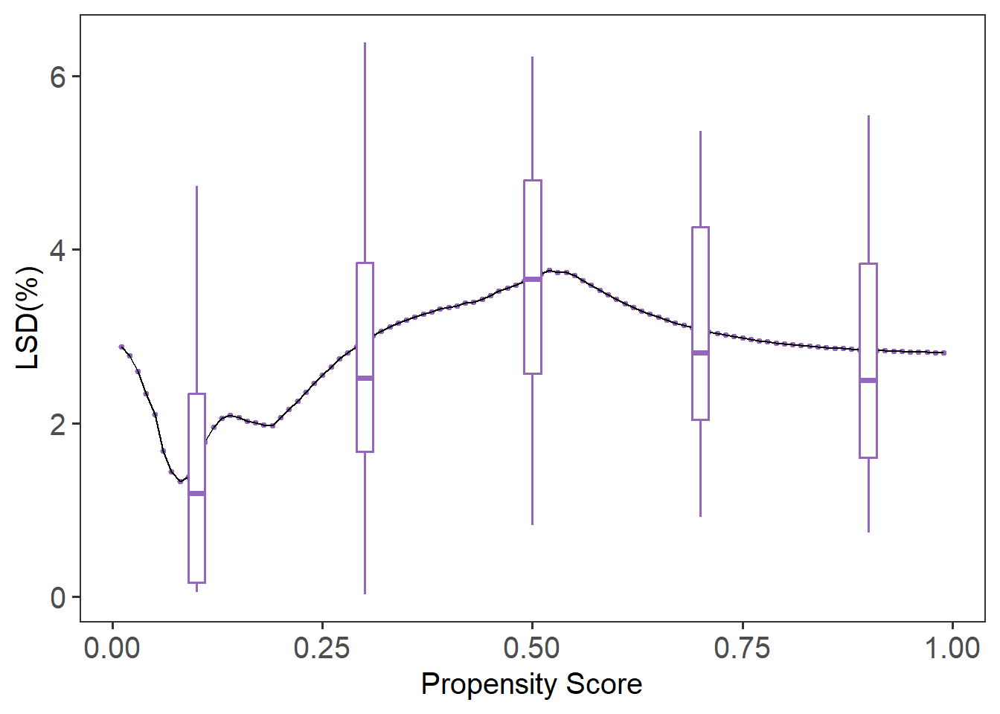
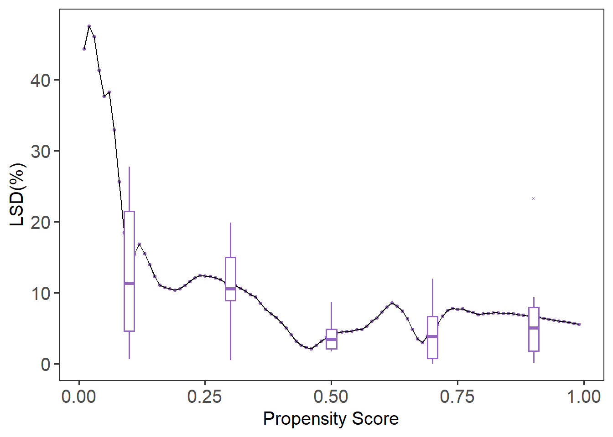

library(LBCNet)
# Automatically creates and sets up "r-lbcnet" virtual environment
setup_lbcnet(create_if_missing = TRUE)Tutorial for LBCNet pacakge
Introduction
Welcome to the LBCNet tutorial! This guide provides a detailed introduction to the LBCNet package and demonstrates its use in causal inference analyses. LBC-Net stands for Local Balance with Calibration implemented by Neural Networks. The package offers a set of tools for estimating propensity scores in a nonparametric and flexible manner using deep neural networks, along with comprehensive diagnostics and visualization utilities.
LBCNet has several key objectives. First, it provides accurate propensity score estimation to support causal effect estimation, including the average treatment effect (ATE) and the average treatment effect on the treated (ATT). Second, it offers diagnostic tools to assess the quality of the estimated propensity scores, such as evaluations of covariate balance, propensity score distributions, and checks for local balance and local calibration. Third, LBCNet includes tools for variance estimation through plug-in influence-function methods, enabling uncertainty quantification for both point estimates and weighted estimators. Finally, the package now supports survival outcome estimands, including IPW-adjusted survival differences and risk differences at a fixed time ( t ), extending LBC-Net’s framework to time-to-event analyses.
Propensity score methods have become a cornerstone for addressing confounding in observational studies. The concept of the propensity score—defined as the probability of treatment assignment conditional on observed covariates—was introduced by Rosenbaum and Rubin (1983). Under the strong ignorability assumption, adjusting for the propensity score allows unbiased estimation of causal effects. A key feature is the balancing property: given the propensity score, the distribution of covariates should be similar between treatment groups. Achieving good covariate balance is essential for reducing bias.
LBC-Net directly targets covariate balance through two theoretical principles: local balance, which enforces covariate balance across a dense grid of balancing scores, and local calibration, which ensures that balancing scores correspond to the true propensity scores. Neural networks are used to optimize these conditions due to their flexibility in modeling complex, nonlinear, and high-dimensional relationships.
This tutorial walks you through the process of setting up LBCNet, including configuration of Python environments via reticulate, and demonstrates a complete analysis using the public lalonde dataset from the sbw package (Zubizarreta, 2024). We cover how to choose model parameters, interpret diagnostic plots, evaluate balance, and compute treatment effects. Examples for variance estimation and survival-based estimands are also highlighted. Practical notes and recommended workflows are included to help users apply LBC-Net effectively in real-world applications.
Support for multiple treatment groups is currently under development and will be included in a future release of the package.
Setup: Configuring Python for LBCNet
Before using LBCNet, you need to configure a Python environment. This environment runs the neural network model behind LBC-Net’s nonparametric propensity score estimation. The package uses the reticulate package to manage Python environments and packages from within R. The key function for managing this setup is setup_lbcnet().
setup_lbcnet() configures the Python environment required by LBCNet. It checks for Python availability, ensures necessary Python packages (e.g., Torch) are installed, and manages virtual environments. You can call setup_lbcnet() directly before running lbc_net(), or let lbc_net() call it automatically during model fitting by passing arguments through setup_lbcnet_args.
How it works:
- If Python has not been configured,
setup_lbcnet()will Automatically create a virtual environment named “r-lbcnet” by default (ifcreate_if_missing = TRUE). And install the required Python packages. - If you already have a virtual environment or want to use system Python, you can customize how
LBCNetconnects to Python.
Option 1: Virtual Environment (Recommended)
This is the default and safest setup, creating a dedicated Python environment for LBCNet. If you have not set up reticulate before, simply run:
This will create a virtual environment named “r-lbcnet” if it doesn’t exist and install all necessary Python packages (TensorFlow, etc.). Then it activates and uses the virtual environment.
If you want to manually create and control the virtual environment, you can do:
library(reticulate)
# Create the virtual environment (only run once)
virtualenv_create("r-lbcnet")
# Activate the virtual environment in your R session
use_virtualenv("r-lbcnet", required = TRUE)Once this is done, lbc_net() will automatically detect and use the environment “r-lbcnet”. If you have multiple virtual environments, specify the environment explicitly via setup_lbcnet(envname = "r-lbcnet"). In addition, you can also pass the environment name when calling lbc_net() by using the setup_lbcnet_args argument:
Option 2: System Python
If you prefer to use an existing system Python installation instead of virtualenv or Conda, you can specify use_system_python = TRUE and point to your Python executable. You can use the following code to find the available Python executables on your system:
Note: Sys.which() returns only the first Python executable found on your system. If this does not match the Python path you want to use, you should specify the correct path manually. If you have a specific Python executable path you want to use, do this:
path <- "C:/Users/mpeng1/AppData/Local/Programs/Python/Python311/python.exe" ## change it to your path
# Set up LBCNet to use system Python
setup_lbcnet(use_system_python = TRUE, system_python_path = path)Alternatively, you can specify it when calling lbc_net():
Option 3: Conda Environment
If you prefer Conda environments, you can specify use_conda = TRUE in setup_lbcnet() and lbc_net() to manage environments through Conda instead of virtualenv. For more details on Conda environments in R, refer to the official Reticulate Documentation.
If you encounter issues, try reticulate::py_discover_config() to see which Python environment is active.
Implementing LBC-Net on the lalonde Dataset (ATE Estimation)
The dataset originates from the National Supported Work (NSW) Demonstration, an experimental program designed to evaluate the impact of employment training on future earnings. The treatment assignment indicator (treatment) specifies whether an individual received the job training (1 = treated, 0 = control). The dataset includes pre-treatment covariates: age (in years), education (years of schooling), black (1 if Black, 0 otherwise), hispanic (1 if Hispanic, 0 otherwise), married (1 if married, 0 otherwise), nodegree (1 if the individual has no high school diploma), re74 (real earnings in 1974), and re75 (real earnings in 1975). The outcome variable is re78, which records real earnings in 1978. The Lalonde dataset includes 614 observations, consisting of 185 treated and 429 control subjects, with a total of 10 variables.
In this example, we use the lbc_net() function to estimate propensity scores for the binary treatment based on the pre-treatment covariates listed above. We run lbc_net() with its default parameters and provide an explanation of key options that users may want to modify depending on their analysis.
First, we fit the LBC-Net model to estimate the propensity score for receiving abciximab treatment. We use the covariates as predictors in the formula.
library(sbw)
data("lalonde")
library(LBCNet)
lbc_net.fit <- lbc_net(
data = lalonde,
formula = treatment ~ age + education + black + hispanic + married + nodegree + re74 + re75,
Y = lalonde$re78,
estimand = "ATE",
max_epochs = 15000,
rho = 0.4
)⚠️ Stopping criterion not met at max epochs. Try increasing `max_epochs` or adjusting `lsd_threshold` for better convergence.
Starting post-processing: computing treatment effect and variance...
✅ LBC-Net training completed successfully.Here, we adjust the lbc_net() parameters to account for the small sample size and limited overlap observed in the Lalonde dataset. The mirror histogram from mirror_hist() shows poor overlap between treated and control groups, making balance harder to achieve. To address this, we increase the training iterations to 15,000 epochs (max_epochs = 15000) and expand the local neighborhood size to 40% of the sample (rho = 0.4). These adjustments give the model more time to optimize and ensure sufficient data points within each local region to improve balance.
The choice of rho is important and can affect the model’s ability to achieve good local balance and global balance. Typically, rho can be selected from a range of 0.1 to 0.5, depending on the sample size and the degree of overlap between treatment groups:
- A smaller rho (e.g., 0.1–0.2) may work well with larger samples and good overlap.
- A larger rho (e.g., 0.3–0.5) is recommended when sample size is small or when overlap is limited, as it ensures enough observations in each local neighborhood for effective balancing. In practice, the optimal rho can be chosen by evaluating the model’s loss function and the mean global standardized difference (GSD). A lower balance loss and a smaller mean GSD typically indicate better covariate balance and improved model performance.
After fitting the LBC-Net model using lbc_net(), the next step is to evaluate its performance and the quality of the estimated propensity scores.
The print() function provides a quick summary of the training process, including the training loss, local balance metrics, and other key indicators. For detailed results, such as causal effect estimates and covariate balance summaries, use the summary() function.
In this example, we use summary() to display the results from the fitted LBC-Net model. The causal effect (ATE or ATT) is already computed during the model fitting step, so summary() does not re-estimate the causal effect; instead, it reports the values stored in the fitted object along with diagnostic summaries. If the outcome variable is not included directly in the model formula, you may specify it explicitly through the argument Y when fitting the model.
summary(lbc_net.fit)Call:
treatment ~ age + education + black + hispanic + married + nodegree + re74 + re75
Sample Size: 614 | Number of Covariates: 8
Treated: 185 | Control: 429
--- Losses ---
Total Loss: 808.4491
--- Local Balance (LSD) % ---
Max LSD: 6.5109
Mean LSD: 2.8801
--- Global Standardized Differences (GSD) % ---
Covariate Pre-GSD Post-GSD
---------------------------------------
age -22.5450 -4.5855
education 4.2090 4.4651
black 163.8478 5.9168
hispanic -25.8951 -1.5541
married -68.8767 -1.2885
nodegree 23.2018 -2.7438
re74 -56.2210 -1.3585
re75 -28.6199 -0.4137
--- Treatment Effect Estimate ---
ATE: -89.0508 (SE: 1088.5337) 95% CI: [-2222.5768, 2044.4752]For binary or continuous outcomes, the ATE or ATT reported in the summary is based on the inverse probability of treatment weights (IPTW) derived from the estimated propensity scores. For time-to-event outcomes, users should instead apply either (a) the dedicated survival method provided by lbc_net_surv(), or a weighted Cox proportional hazards model using the estimated weights, e.g.: coxph(Surv(time, event) ~ abcix, data = lindner, weights = lbc_net.fit$weights).
The summary() output also includes a covariate balance table, which reports the standardized mean differences before and after weighting, and a global balance metric, the Global Standardized Difference (GSD). The GSD summarizes the overall covariate imbalance across all variables, expressed as a percentage. You can extract these tables from the summary output using summary_out$balance_table (a data frame) and summary_out$gsd.
To evaluate the performance of LBC-Net relative to traditional methods, we can compare its global balance (GSD) with that obtained from logistic regression propensity scores.
Here is another example illustrating how to analyze survival outcomes using lbc_net_surv() with the well-known Primary Biliary Cirrhosis (PBC) dataset from the survival package. This study followed 418 patients enrolled in a randomized clinical trial evaluating the effect of the drug D-penicillamine on survival in primary biliary cirrhosis. The dataset contains patient survival time, event status, treatment assignment, and a number of important prognostic covariates such as age, bilirubin level, albumin, and prothrombin time.
For demonstration, we define the treatment indicator as Tr = 1 for the active treatment arm and Tr = 0 for placebo, and we estimate the survival difference at the median survival time (the default in lbc_net_surv()).
library(survival)
data(pbc)
pbc <- na.omit(pbc)
pbc$trt <- ifelse(pbc$trt == 1, 1, 0)
pbc$status <- ifelse(pbc$status == 0, 0, 1)
fit_surv <- lbc_net_surv(
data = pbc,
formula = trt ~ .-time-id-status,
time = pbc$time,
delta = pbc$status
)Python is already set up. Skipping `setup_lbcnet()`.Calculating propensity scores for ck/h calculation...⚠️ LSD stopping criterion not met by max_epochs. Consider increasing `max_epochs` or adjusting `lsd_threshold`.
Starting post-processing: computing treatment effect and variance...
✅ LBC-Net survival estimation completed successfully.
summary(fit_surv)Call:
trt ~ . - time - id - status
Sample Size: 276 | Number of Covariates: 16
Treated: 136 | Control: 140
--- Loss ---
Total Loss: 728.9798
--- Local Balance (LSD) % ---
Max LSD: 13.3053
Mean LSD: 2.4379
--- Global Standardized Differences (GSD) % ---
Covariate Pre-GSD Post-GSD
--------------------------------------
age 25.8307 2.7128
sexf -14.3555 -0.2983
ascites 9.3867 -3.5472
hepato -17.3835 1.8195
spiders 1.8523 2.3435
edema 10.5640 3.7977
bili -16.2393 -2.4130
chol -4.3460 -0.6896
albumin -10.7653 1.5674
copper 5.7695 3.1788
alk.phos 1.8797 1.2826
ast -8.1487 2.3462
trig -3.5608 1.7385
platelet -7.8802 -3.8991
protime -14.1917 -2.1593
stage -16.0707 -2.5238
--- Survival Difference Delta(t) = S1(t) - S0(t) ---
Grid of evaluation times:
time S1 S0 diff se ci_low ci_high
3170 0.4182155 0.5074675 -0.08925205 0.004087976 -0.09726449 -0.08123962Below is an example of how to fit a logistic regression model, extract the predicted propensity scores, and compute the GSD using the gsd() function.
log.fit <- glm(
treatment ~ age + education + black + hispanic + married + nodegree + re74 + re75,
data = lalonde,
family = binomial()
)
ps_log <- log.fit$fitted.values
Tr <- lalonde$treatment
Z <- lalonde[, c("age", "education", "black", "hispanic", "married", "nodegree", "re74", "re75")]
## Compute GSD
gsd_log <- gsd(
Z = Z,
Tr = Tr,
ps = ps_log
)
gsd_log age education black hispanic married nodegree re74
-14.947443 12.094698 10.175575 1.447039 -19.351822 -11.262428 -25.978241
re75
-16.354046
## Calculate ATE
wt_log <- 1/(ps_log*Tr+(1-Tr)*(1-ps_log))
est_effect(Y = lalonde$re78, Tr = Tr, wt = wt_log)[1] 224.6763Evaluating the Estimated Propensity Scores
After fitting the LBC-Net model and obtaining propensity scores, the next step is to evaluate how well these scores satisfy the key assumptions required for causal inference, such as overlap and covariate balance. This section demonstrates how to use LBC-Net’s diagnostic plots to assess the quality of the estimated scores.
The mirror histogram shows the distribution of propensity scores for treated and control groups. It helps assess the overlap (common support) assumption, which is critical for valid causal comparisons. You can generate this plot directly from the fitted lbc_net object as follows:
mirror_hist(lbc_net.fit)
While the sample size is relatively small, there is reasonable overlap between groups across much of the propensity score range. In larger datasets, this overlap may be even clearer, but the current plot suggests the assumption is adequately met.
The mirror_hist() function can also be used with any set of propensity scores by specifying ps and Tr. For example, with propensity scores from a logistic regression model mirror_hist(ps = ps_log, Tr = Tr).
Local Calibration and Local Balance
After fitting the LBC-Net model, it is important to evaluate whether the estimated propensity scores satisfy key theoretical properties: calibration and covariate balance. These evaluations help assess the quality of the propensity score model and its ability to support valid causal inference.
The local calibration check assesses whether the estimated propensity scores accurately reflect the probability of treatment assignment. We use the plot_calib() function to visualize calibration. A well-calibrated model will have its fitted line closely follow the 45-degree line, indicating that predicted probabilities match observed treatment rates across the score range.
plot_calib(lbc_net.fit)
In this case, due to the small sample size and limited overlap in the Lalonde dataset, we observe some deviation from the 45-degree line, particularly in the middle range of the propensity scores. This suggests that while LBC-Net performs reasonably well, achieving perfect calibration in smaller samples with poor overlap remains challenging.
The local balance check evaluates whether covariates are balanced between treatment groups across the range of propensity scores. We use the lsd() function to calculate the Local Standardized Differences (LSD) and summarize them across covariates.
Call:
function (x, ...) UseMethod("formula")
Sample Size: 614 | Number of Covariates: 8
Treated: 185 | Control: 429
Estimand: ATE (Average Treatment Effect)
--- Local Balance (LSD) % ---
Max LSD: 6.5110
Mean LSD: 2.8801
Covariates LSD %
--------------------
age 4.7450
education 4.0238
black 4.8189
hispanic 2.0604
married 2.3148
nodegree 2.7860
re74 1.4534
re75 0.8387
plot(lsd.fit)
The summary(lsd.fit) function provides the mean LSD for each covariate, while plot(lsd.fit) visualizes local balance across the entire score range. The default plot shows boxplots summarizing the variation in local balance across all covariates (cov = “all”). To focus on a specific covariate, such as age, you can specify it directly with cov = "age". If you prefer to remove the boxplots and focus on the local balance curves, you can suppress them by setting box.loc = NULL. In this example, LBC-Net maintains local standardized differences generally under across the full range of propensity scores, suggesting good local balance.
For comparison, we can evaluate the local balance and calibration of propensity scores estimated from a traditional logistic regression model.
plot_calib(Tr = Tr, ps = ps_log)
Call:
function (x, ...) UseMethod("formula")
Sample Size: 614 | Number of Covariates: 8
Treated: 185 | Control: 429
Estimand: ATE (Average Treatment Effect)
--- Local Balance (LSD) % ---
Max LSD: 77.7346
Mean LSD: 10.2577
Covariates LSD %
--------------------
age 16.3696
education 9.0942
black 6.0572
hispanic 2.9699
married 13.7013
nodegree 12.7773
re74 11.7533
re75 9.3384
plot(lsd.fit.log)
Compared to LBC-Net, logistic regression shows larger global and local imbalance, with higher LSD values and more severe deviations in the calibration plot. These results highlight the advantage of LBC-Net in achieving better local balance and calibration, particularly in datasets with challenging overlap and sample size conditions.
Chat: Balance Covariate Distribution
The plot_cov_bal() function shows the distribution of a specific covariate in the treated and control groups, both before and after weighting. This allows you to visually assess whether LBC-Net has improved covariate balance after applying weights. In this example, we examine the balance of the covariate age:
plot_cov_bal(lbc_net.fit, cov = "age", use_weights = TRUE)
By default, the plot displays the weighted distribution using kernel density estimation. If you prefer to view the unweighted distribution, you can set use_weights = FALSE. Additionally, you can display the distribution as histograms instead of density plots by using plot_type = "hist". For categorical variables, the function will automatically display histograms. In most cases, binary variables are well balanced after weighting. However, for categorical variables with more than two levels, you should create dummy (one-hot encoded) variables before fitting the model to ensure proper balance across categories.
As shown in the plot, the method is designed to balance the first moment (mean) of covariates. However, it may not fully balance the entire distribution, particularly for continuous variables such as age. To address this, one option is to categorize continuous variables and treat them as categorical in the model. This can improve balance across the categories, rather than just matching the means. Below, we categorize age into 3 groups and education into 4 groups. We then create dummy variables for these categories and fit the LBC-Net model using the newly processed data.
library(janitor)
# Categorize age (3 groups) and education (4 groups)
lalonde$age_group <- cut(lalonde$age, breaks = c(16, 23, 30, 37, 44, 55), include.lowest = TRUE)
lalonde$education_group <- cut(lalonde$education, breaks = c(0, 6, 12, 16, 18), include.lowest = TRUE)
# Create dummy variables
age_dummies <- model.matrix(~ age_group - 1, data = lalonde)
education_dummies <- model.matrix(~ education_group - 1, data = lalonde)
# Clean names
colnames(age_dummies) <- janitor::make_clean_names(colnames(age_dummies))
colnames(education_dummies) <- janitor::make_clean_names(colnames(education_dummies))
# Combine data
lalonde_processed <- cbind(
lalonde[, !(names(lalonde) %in% c("age", "education", "age_group", "education_group"))],
age_dummies,
education_dummies
)
colnames(lalonde_processed) <- janitor::make_clean_names(colnames(lalonde_processed))
# Fit LBC-Net model
lbc_net.fit.new <- lbc_net(
data = lalonde_processed,
formula = treatment ~ . - re78,
max_epochs = 15000,
rho = 0.4
)⚠️ Stopping criterion not met at max epochs. Try increasing `max_epochs` or adjusting `lsd_threshold` for better convergence.
✅ LBC-Net training completed successfully.After fitting the new model, you can review the updated balance summaries and compare the covariate distributions across methods.
plot_cov_bal(Z = Z, Tr = Tr, wt = lbc_net.fit.new$weights, cov = "age", use_weights = TRUE)
plot_cov_bal(Z = Z, Tr = Tr, wt = wt_log, cov = "age", use_weights = TRUE)
Reference
Rosenbaum, P. R. and Rubin, D. B. (1983). The central role of the propensity score in observational studies for causal effects. Biometrika, 70(1):41–55.
Zubizarreta J, Li Y, Kim K (2024). sbw: Stable Balancing Weights for Causal Inference and Missing Data. R package version 1.1.9, https://CRAN.R-project.org/package=sbw.
Contribute and Feedback
We welcome contributions, feedback, and suggestions!
- Report bugs or request features on our GitHub Issues page.
- Fork the repository and submit pull requests to help improve LBCNet!